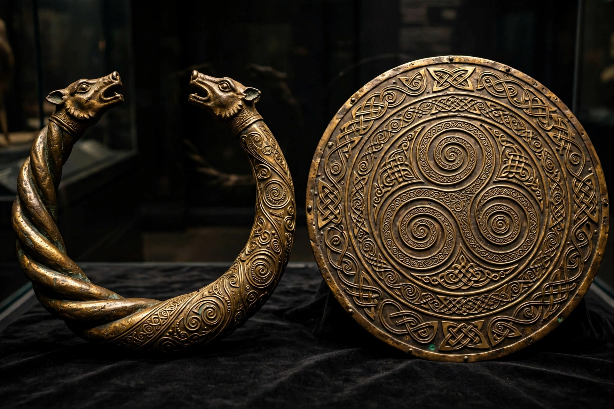

Celtic artCeltic art is associated with the peoples known as Celts; those who spoke the Celtic languages in Europe from pre-history through to the modern period, as well as the art of ancient peoples whose language is uncertain but who have cultural and stylistic similarities with speakers of Celtic languages.
The Hallstatt culture (c. 800–450 BC) produced geometric ornament; the succeeding La Tène style, from about 450 BC, developed flowing curvilinear patterns, spirals and stylised animals in fine metalwork — torcs, brooches, shields such as the Battersea shield, and the Gundestrup cauldron.
In early medieval Ireland and Britain, Celtic art fused with Germanic and Christian influences into the Insular style: illuminated manuscripts such as the Book of Kells (c. 800), high crosses, and metalwork like the Tara Brooch and Ardagh Chalice, dense with interlace, knotwork and spiral ornament.
The 19th-century Celtic Revival, part of wider national romanticism and the Arts and Crafts movement, revived these motifs in jewellery, architecture and design, where they remain popular.